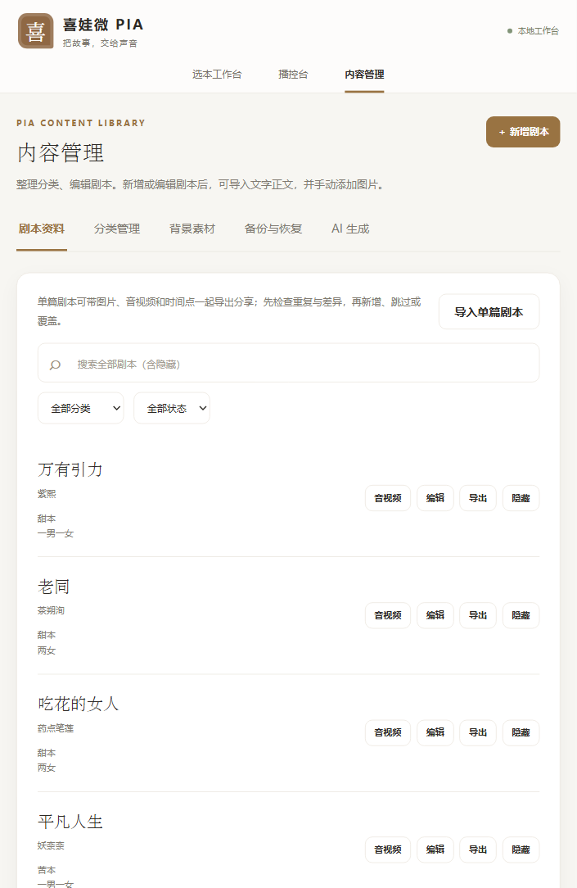
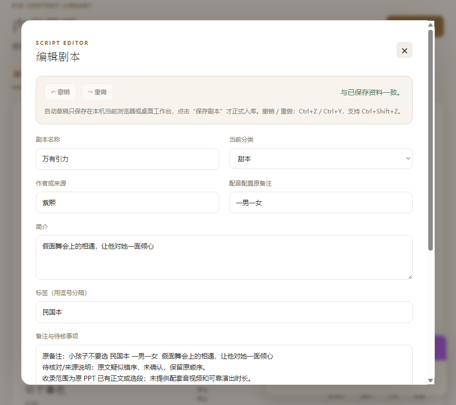
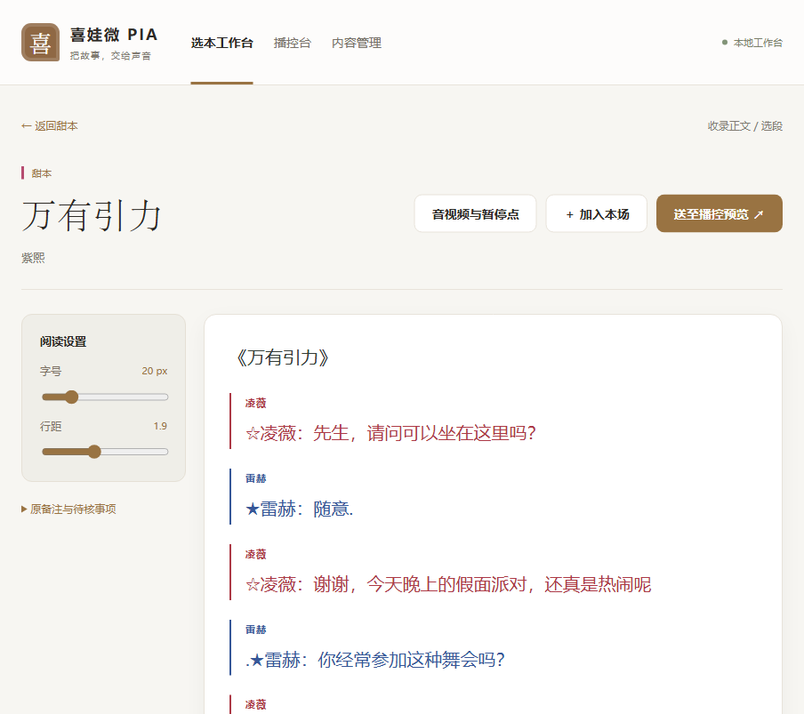
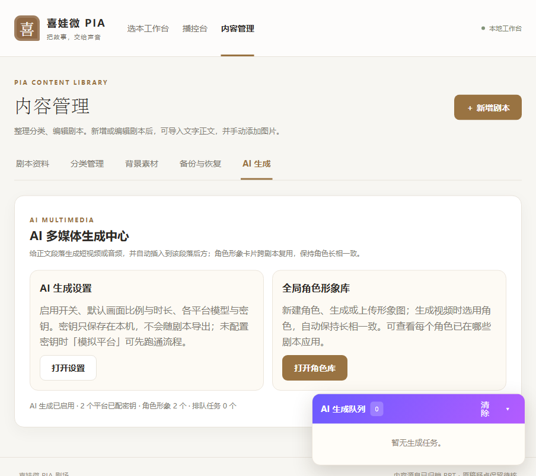
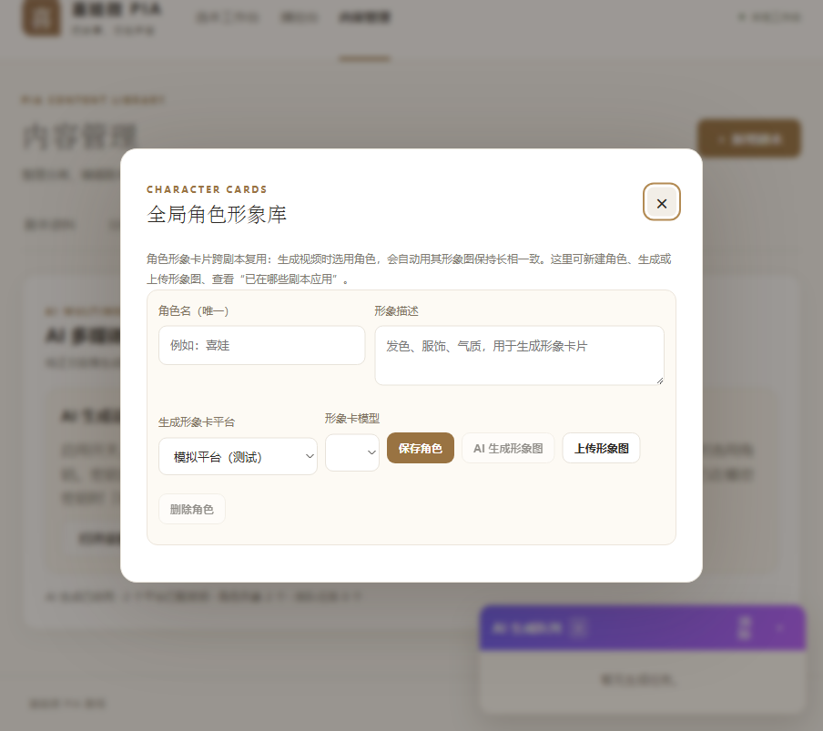
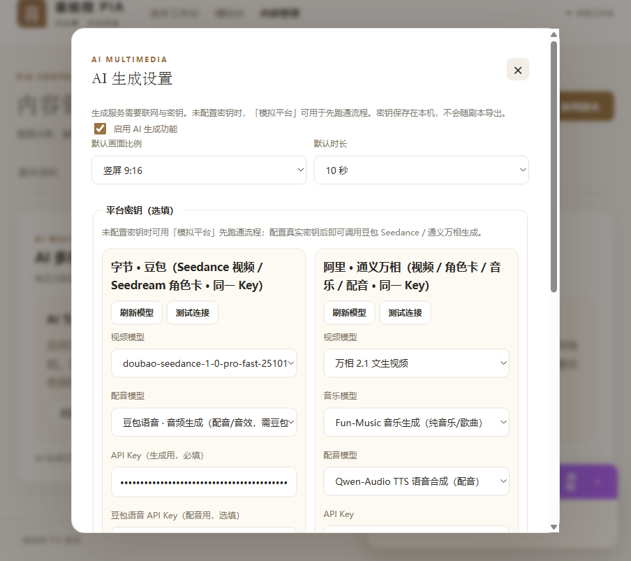
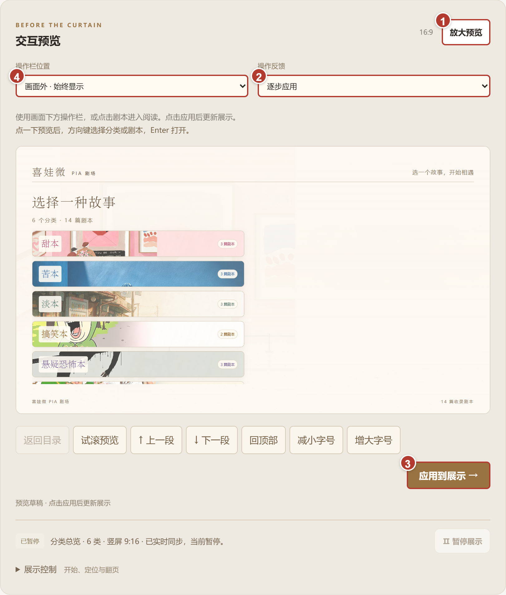
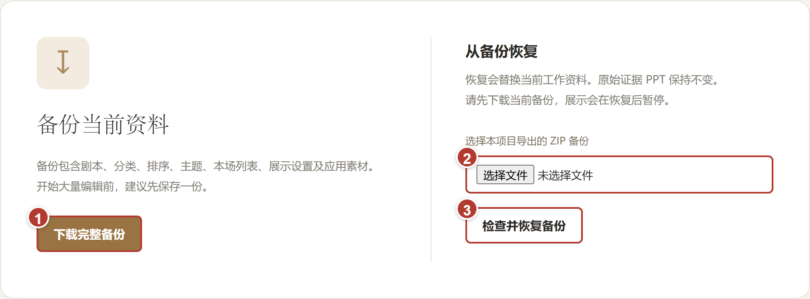

喜娃微PIA 选本与直播工作台 · 0.2.2 AI 四通道版 · 新手图文说明书
把故事交给声音。
新手也能 5 分钟上手。
这是一套本地剧本工作台：收集和整理剧本、编辑台词、给段落配图片与音视频、用 AI 生成多媒体内容，并把内容推到直播画面。它由两个工具组成：主播端管理系统（你自己用，功能最全）和粉丝编辑器（发给粉丝，让他们只改剧本、不碰你的系统）。所有资料只保存在本机，不联网、不外传。
1解压与启动（3 步）
- 解压：把交付包解压到桌面或“文档”里的普通文件夹。不要在压缩包里直接启动。
- 启动：打开「主播端管理系统」→ 0.2.2 文件夹，双击 喜娃微PIA工作台.exe。第一次运行会释放桌面组件，等待约 1 分钟；以后每次都是秒开。桌面窗口没出现时，用浏览器打开：
http://127.0.0.1:8765/
- 关闭：直接关掉桌面窗口即可，资料会自动保存。也可以在窗口里按 Ctrl+C。
不用安装任何东西：不需要 Python、Node.js 或 OBS，日常使用也不用联网。适用 Windows 10 / 11 的 64 位电脑。0.2.1 文件夹是旧版本，保留备用的，功能更少，除非回退否则不用打开。
2认识界面
打开后默认进入内容管理：顶部是导航（选本工作台 / 播控台 / 内容管理），中间一排标签是内容管理的五大块：剧本资料、分类管理、背景素材、备份与恢复、AI 生成。

① 剧本列表（点「编辑」进编辑器） ② 搜索 / 分类 / 状态筛选 ③ 导出单篇 ZIP ④ 隐藏（防误删） ⑤ 五大标签，AI 生成在最右边
选本工作台：按分类挑剧本、直接阅读和预览；播控台：控制直播画面，把内容推给观众。下面几步先从内容管理开始。
3新建与编辑剧本
- 内容管理里点右上角 ＋新增剧本，填好名称、分类、作者。可以先只填名称。
- 点剧本右侧的 编辑，进入资料页：简介、标签、备注等在这里补。
- 打开剧本正文页（点剧本名），右侧就是正文编辑区。直接点任意段落就能改台词。
- 想省事？新建后点 导入正文：粘贴一大段文字，或上传 TXT / DOCX，系统会自动把对话排成台词段落。
- 改完记得点 保存剧本。右上角显示“与已保存资料一致”就说明存好了。

资料编辑：名称、分类、作者、简介、标签、备注都在这里。

正文页：点段落改字；右上角「音视频与暂停点」管理段落媒体，「＋加入本场」「送至播控预览」用于直播。
5AI 多媒体生成（视频 / 图片 / 音乐 / 配音）
进入 内容管理 → AI 生成，就是 AI 多媒体生成中心。它负责两件事：给正文段落生成短视频或音频并自动插到段落后方，以及 维护角色形象卡（跨剧本保持角色长相一致）。

AI 生成中心：左边是「AI 生成设置」（密钥、模型、默认比例时长），右边是「全局角色形象库」，右下角是生成队列。
目前有四个生成通道，各有各的用途：
| 通道 | 生成什么 | 用什么模型（示例） |
|---|
| 视频 | 给某段剧情配一段短视频画面 | 字节 Seedance / 阿里万相 |
| 图片 | 角色形象卡、剧情插图 | 字节 Seedream / 阿里通义万相 |
| 背景音乐 | 段落背景音乐（纯音乐 / 歌曲） | 阿里 Fun-Music |
| 配音 | 角色语音、旁白（独立配音文件夹） | 字节豆包语音 / 阿里 Qwen-TTS |
用法：先在 AI 生成设置里配好密钥（下一步），再到正文段落旁选择生成。生成任务在右下角队列里排队，完成会有提示，产物自动归档到 instance/ai_output（按 video / image / audio / voice 分文件夹），不用你手动找。
全局角色形象库：让角色长相保持一致
同一个角色在不同剧本里出现，长相想保持一致？用角色形象卡。在 AI 生成中心点 打开角色库：

角色形象库：新建角色 → 填角色名和形象描述 → 生成或上传形象图，列表会标出每个角色已在哪些剧本应用。
- 新建角色：填「角色名（唯一）」和「形象描述」（发色、服饰、气质等），点「保存角色」。
- 形象图三种来源：点「AI 生成形象图」（选平台和模型，自动识别图片格式）；或「上传形象图」（PNG / JPG / WEBP）；也可以先不配图只保存角色。
- 角色列表里每个角色都标注了已在哪些剧本应用；点选角色可查看形象图、修改或删除。
- 之后生成视频时，在「参考角色」里选这个角色，画面就会自动沿用它的形象图，跨剧本保持一致。
6AI 密钥设置（最难的 5 分钟，看这里）
AI 生成需要联网调用大厂的模型，所以要填密钥（API Key）。别怕，两步：去平台拿到 Key → 粘贴进来 → 点「测试连接」。

AI 生成设置：左边字节·豆包，右边阿里·通义万相。每个平台有自己的「测试连接」按钮。
- 点 AI 生成 → 打开设置。
- 没填 Key 也能先试：选「模拟平台」，流程能完整跑通，只是产物是演示内容。
- 要真实生成时，去 火山方舟（字节）或 百炼（阿里）控制台申请 API Key，粘贴到对应输入框。
- 每个平台都有「测试连接」按钮：一点就知道 Key 填对没有、哪些模型已开通。通不过就按提示改，不用猜。
- 右上角「刷新模型」：会自动只显示你已开通的模型，避免选到用不了的。
密钥只保存在本机，不会随剧本导出，也不会发到任何地方。生成失败时界面会直接显示原因（比如“模型未开通”），照着提示去控制台开通对应模型即可。
7导入与导出（和粉丝协作的流程）
整个协作是一个 ZIP 来回转：
- 主播导出：剧本列表点「导出」，得到一个单篇 ZIP（含台词、图片、音视频和时间点）。
- 粉丝编辑：粉丝用「喜娃剧本粉丝编辑器.exe」打开这个 ZIP，改台词、加图，然后导出新 ZIP。
- 主播导入：回内容管理点「导入单篇剧本」选这个 ZIP。系统会先检查与现有剧本的重复和差异，再让你选「新增 / 跳过 / 覆盖」，不会把旧数据冲掉。
换电脑、换版本时也一样：旧版先在「备份与恢复」导出完整备份，新版解压到另一个文件夹后恢复备份。不要用旧压缩包直接覆盖正在使用的资料文件夹。
8播控与展示（把内容推给观众）
- 在正文页点 「送至播控预览」，内容进入播控台的交互预览。
- 把「操作反馈」选为 「逐步应用」，先自己检查内容、横竖屏和字号。
- 点 「打开独立展示窗口」：这是给观众看的窗口（可被 OBS / 直播伴侣采集）。
- 回播控台点 「应用到展示」，观众窗口才真正更新。

预览面板：② 选“逐步应用”，③ 把内容应用给观众。
工作台负责展示内容，不会自动替你开启抖音直播；开播前先在直播伴侣里试一次翻页，确认采集的是「喜娃微PIA · 独立展示」窗口。
9备份与恢复
大量修改前，去 内容管理 → 备份与恢复 下载一份完整备份（一个 ZIP）。换电脑、换版本、重装前先备份；要恢复时在同一页面导入备份即可。

内容管理 → 备份与恢复：一键下载完整备份，随时恢复。
10常见问题与报错怎么看
双击 exe 没反应 / 网址打不开
确认是解压后的文件夹（不是在压缩包里）双击；第一次启动等 1 分钟让桌面组件释放。网址用窗口里显示的完整地址，如 http://127.0.0.1:8765/。程序停止后网址打不开是正常的，重新启动即可。如果弹了错误文字，拍照交给提供程序的人，保留现有资料。
提示端口被占用 / 打不开
说明已经有一个工作台在运行（重复启动了）。先关闭旧窗口再启动；或按窗口提示用 --port 指定其他端口。
AI 生成报错“模型未开通”或 404
这是账号还没开通那个模型，不是软件坏了。报错里会写明是哪个平台、哪个模型（比如 doubao-seedream-3-0-t2i），去对应控制台的「开通管理 / 模型广场」开通后，点「刷新模型」再试。
AI 报错全是英文看不懂
核心就看三处：平台名（字节 / 阿里）、错误码（404 是没有该模型、400 是参数问题、401 是密钥不对、429 是额度用尽）、提示里的模型名。把整段报错发给提供程序的人最快。
生成成功但没插到正文
生成产物会自动存进 instance/ai_output 对应文件夹；在正文段的「音视频与暂停点」里可以插入或替换已生成的 AI 产物，也可以手动选择要挂在哪一段。
视频打不开或没声音
确认文件夹完整；浏览器若提示尚未允许播放，在观众窗口点一下播放。预览默认静音，实时同步时声音由独立展示窗口播放。
隐藏了剧本怎么找回 / 想删除
列表右上筛选选“含隐藏”，已隐藏的剧本会显示出来，可取消隐藏；删除按钮在隐藏后才会出现，删除前还有二次确认，避免误删。
换电脑 / 想保留一份资料
停止工作台后复制整个文件夹即可；更稳的是用「备份与恢复」导出完整备份 ZIP。
最后一句
这套工具的价值是：剧本、图片、音视频、AI 产物、密钥——一切都长在你自己的电脑里。文件夹里 docs 还有更详细的图文说明书（Word 版），交付包里的 交付包说明.txt 说明了每个文件夹是什么版本。